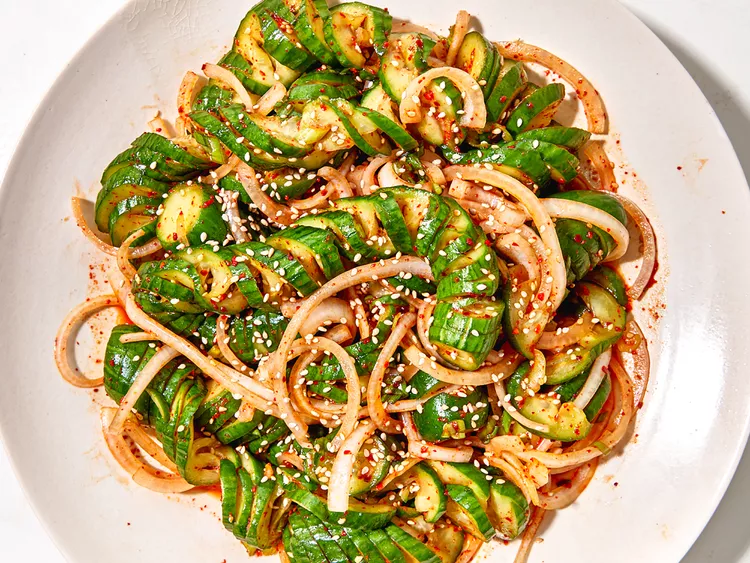

Sprial Cucumber Salad

Description :
This spiral cucumber salad recipe is inspired by the Korean cucumber banchan known as 오이무침 or oi muchim.
Banchan are small side dishes that are served alongside Korean meals. Every time I go to a Korean restaurant, I always find myself asking for refills of the cucumber banchan.
Oi muchim is so refreshing and has a ton of flavor. It is spicy, a little sweet, salty, and tart. It hits all the taste buds!
The spiral cucumber shape is viral on TikTok and has taken social media by storm. In my opinion, it is completely worth the hype.
Ingrediants :
-
6 to 8 mini seedless cucumbers
-
1/2 yellow or white onion, thinly sliced
-
4 green onions, thinly sliced
-
2 cloves garlic, finely minced
-
2 tablespoons gochugaro (Korean red pepper flakes)
-
3 tablespoons soy sauce
-
2 tablespoons rice vinegar
-
2 tablespoons brown sugar
-
2 tablespoons brown sugar
-
2 teaspoons toasted sesame seeds, plus more for garnish if desired
Directions :
- Step 1
Place cucumber between two chopsticks or wooden spoon handles and make diagonal cuts 1/8 -inch apart, taking care not to cut all the way through. Flip cucumber over and make cuts straight across on the second side taking care not to cut all the way through. Repeat with remaining cucumbers and place them in a large bowl. Sprinkle cucumbers liberally with salt, being sure to get salt into the crevices. Let stand for 15 to 20 minutes.
- Step 2
Drain liquid off cucumbers and submerge cucumbers in cold water to rinse off salt. Drain well and place cucumbers on paper towels to dry.
- Step 3
Add cucumbers, onions, garlic, gochugaro, soy sauce, rice vinegar, brown sugar, sesame oil, and sesame seeds to a large bowl; toss to coat. Serve immediately or refrigerate until ready to serve. Sprinkle with more sesame seeds if desired.